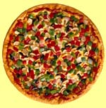

| Lo sai che ...
In Italy, pizza and pizzerie are important parts of the Italian diet and culture. Today pizza has also become very popular around the world! I giovani italiani amano la pizza! On Saturday night they often go out with friends to a local pizzeria. It is a food that young people enjoy and furthermore it is well within their budget! Pizza al taglio is also a very popular place for pizza. Here slices of freshly baked pizza can be purchased. It is a popular snack for teenagers when they are in centro shopping or simply meeting up with friends. |
For pizza lovers:
| The good news
Traditional pizza when made with the right ingredients is very healthy! It is a meal in itself containing protein, vitamins and carbohydrates. |
The bad news Due to the popularity of pizza around the world, pizza chains have emerged. Unfortunately this has compromised the quality of the pizza. |
Here are the characteristics of a traditional pizza.
The next time you go for a pizza, you will be able to ask il pizzaiolo whether the pizza served is tradizionale!
A traditional Italian pizzeria is la Pizzeria Rustica.
La pizza è strepitosa! Fa venire l’acquolina in bocca! (mouth-watering!)
Andiamo a vedere questa pizzeria tradizionale!
Buon appetito!
Look at the selection of the pizzas on this menu.
| Every pizzeria has a specialty pizza. It is often called after the pizzeria. In this case: la Pizza Rustica. |
Imagine that you are at the pizzeria. You want to make the right choice and have the ultimate pizza!!!
To help you understand the menu, find the answers to the following nine What if ...? questions and three osservazioni questions at the end.
Ecco il cameriere! It is time to order your pizza. Make your selection.
| Il cameriere: | Cosa prende? |
| Tu: |
Buon appetito!
| Italians always say ’Buon appetito!‘ before they begin to eat their meals. |
| Tu: | Cameriere, il conto per piacere. |
| Il cameriere: | Sì subito. |
What will you pay for your pizza?
Don't forget that you need to include il coperto! If you have asked for any extra items, include the extra cost.
What would it cost in Australian dollars? Search the Internet for a currency converter.
| Il coperto is a cover charge. Generally Italian pizzerie/ristoranti have a cover charge which has to be added on to il conto as a separate item. |
If you want to know more about Italian pizza, visit www.pizza.it or go to www.yahoo.it and search for ‘pizza’ or ‘pizzeria’. If you can refine your search, for example add the name of an Italian city, you will reduce the number of suggested matches!
In Australia, traditional Italian wood-fired pizza is very popular and readily available in many pizzerie.
To get an idea of the number of pizzerie in your area/city you can:
| Most Italian restaurants have pizza on the menu. However, they don't necessarily have pizzeria in their name. |
You will be amazed at how many there are in the metropolitan area!
| How many were you able to find? | |
| How many Italian restaurants/cafés can you find? | |
| Which Italian pizzeria e ristoranti have you been to? | |
| Quale pizzeria preferisci? | |
| Quale ristorante preferisci? | |
| Quale pizza preferisci? | |
| Qual’è la tua pizza preferita? |
Cosa ti piace sulla pizza? |
Cosa non ti piace sulla pizza? |
|---|---|
Look at the menu from the Pizzeria Rustica to help you with vocabulary. Use your dictionary to look up any new words you may need.
| Lo sai che ...
A pizza maker in a small Northbridge restaurant won the title of the best pizza maker in the world! In 2000, Nunzio Nici from Il Padrino Caffe won an award for the best pizza maker in the world, as declared by the Pizza Association of Sicily. Check out his website here at www.ilpadrinocaffe.com. |
In Australia the concept of pizza al taglio is relatively new. Delizioso Café in Subiaco is one of the first Pizza al taglio in the Perth metropolitan area.
Raffaele Brotzu is the owner. He is making a name for himself in the Australian national stage of pizza competitions.
Let's meet Raffaele on site at Delizioso Café. Watch the following video segments.
La nostra inviata Angela, interviews Raffaele.
You will notice that the language is partly in inglese and partly in italiano. This should help you understand the general gist of the interview. Don't worry if you cannot understand too much when Raffaele speaks in italiano.
| Pizza al taglio in Italy |
Delizioso café |
| Raffaele's success as a pizza maker |
|
What have you learnt? Jot down points in English in the worksheet B2.10.
| The questions are intended as a guide. You can include any other relevant information you are able to understand. |
Watch Raffaele, il pizzaiolo from Delizioso Café taking you through the steps of how to make the very popular pizza margherita.
È molto semplice e facile.
As you watch Raffaele, jot down details of the recipe so that you can try it for yourself.
| Sorry! He didn't show you how to make la pasta per la pizza because it is his trade secret. |
Raffaele gave you a general idea of how to make the pizza topping. Below is a recipe with more specific details on how to prepare it.
Pizza Margherita
I condimenti – Ingredienti
Preparazione